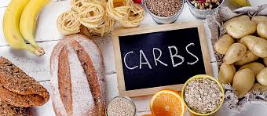
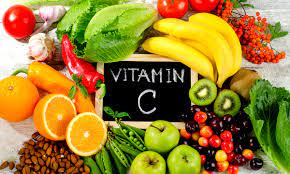
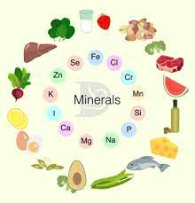
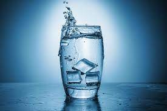

6 Essential Nutrients and Why Your Body Needs Them
There are 6 basic nutrients that can help support your health, even in small amounts. Eating a balanced diet can help you make sure you’re regularly consuming each one.
Essential nutrients are compounds that the body can’t make or can’t make in sufficient quantity. According to the World Health OrganizationTrusted Source, these nutrients must come from food, and they’re vital for disease prevention, growth, and good health. While there are many essential nutrients, they can be broken into two categories: macronutrients and micronutrients. Macronutrients are eaten in large amounts and include the primary building blocks of your diet — protein, carbohydrates, and fat — which provide your body with energy. Vitamins and minerals are micronutrients, and small doses go a long way. There are six main groups of essential micronutrients and macronutrients.
Protein
Protein is having its moment, and not just in the workout community. But all of the hype is for a good reason. Protein is essential for good health.Protein provides the building blocks of the body, and not just for muscle. Every cell, from bone to skin to hair, contains protein. A startling 16 percent of the average person’s body weight is from protein. Protein is used primarily for growth, health, and body maintenance. All of your hormones, antibodies, and other important substances are composed of protein. Protein is not used to fuel the body unless necessary.Proteins are made of up different amino acids. While the body can create some amino acids on its own, there are many essential amino acids that can only come from food. While meat, fish, and eggs are good sources of essential amino acids, you can also get protein from plant sources like beans, soy, nuts, and some grains. Exactly how much protein you need daily depends on a variety of factors including how active you are, and your age.
Carbohydrates
Don’t let the low-carb craze fool you. Carbohydrates are necessary for a healthy body. Carbs fuel your body, especially your central nervous system and brain, and protect against disease, according to the Mayo Clinic. Carbohydrates should make up 45 to 65 percent of your total daily calories, according to the Dietary Guidelines for AmericansTrusted Source. Healthy sources : Before you reach for the white bread or pasta, keep in mind that the type of carb you eat matters. Some carbs are healthier than others. Opt for whole grains, beans, and fiber-rich vegetables and fruits instead of refined grains and products with added sugar.
Fats
Fats often get a bad rap, but recent research has shown that healthy fats are an important part of a healthy diet. According to Harvard Medical School, fat supports many of your body’s functions such as vitamin and mineral absorption, blood clotting, building cells, and muscle movement. Yes, fat is high in calories, but those calories are an important energy source for your body.Including healthy fats in your diet can help you to balance your blood sugar, decrease your risk of heart disease and type 2 diabetes, and improve your brain function. They’re also powerful anti-inflammatories, and they may lower your risk of arthritis, cancer, and Alzheimer’s disease. Healthy sources : The most famous unsaturated fats are omega-3 and omega-6 fatty acids. Unsaturated fats are important for your body as they provide essential fatty acids your body can’t make. You can find these healthy fats in nuts, seeds, fish, and vegetable oils (like olive, avocado, and flaxseed).
Vitamins
Vitamins are vital for warding off disease and staying healthy. The body needs these micronutrients to support its functions. There are 13 essential vitamins that the body needs to function properly, including vitamins A, C, B6, and D.Each vitamin plays an important role in the body, and not getting enough of them can cause health problems and disease. Many Americans do not get enough of many essential vitamins. Vitamins are essential for healthy vision, skin, and bones. Vitamins may lower the risk of lung and prostate cancer, and they’re powerful antioxidants. Vitamins like vitamin C boost the immune system and help the body heal. Healthy sources : If you eat a varied, well-balanced diet full of vegetables and fruits, and have a normal and healthy functioning digestive tract, you likely don’t need to take vitamin supplements.
Minerals
Much like vitamins, minerals help support the body. They’re essential for many body functions, including building strong bones and teeth, regulating your metabolism, and staying properly hydrated. Some of the most common minerals are calcium, iron, and zinc. In addition to strengthening bones, calcium helps with nerve signal transmission, maintaining healthy blood pressure, and muscle contraction and relaxation. Iron supports your red blood cells and hormone creation, while zinc boosts your immune system and wound healing.
Water
You can go for weeks without food, but you can’t last more than a few days without water. Water is absolutely crucial for every system in your body. It’s also the main thing you are made of. About 62 percent of your body weight is water. Water improves your brain function and mood. It acts a shock absorber and a lubricant in the body. It also helps flush out toxins, carry nutrients to cells, hydrate the body, and prevent constipation.Even mild dehydration can make you feel tired and impair your concentration and physical performanceTrusted Source.
